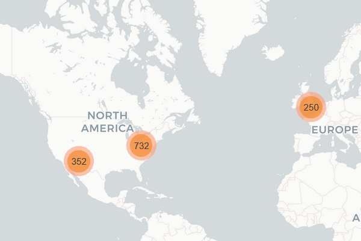

Building‑Level Electricity Analytics & Forecasting
A full end-to-end workflow that cleans raw interval-meter data from multi-year building electricity consumption, enriches it with weather and metadata, fills gaps, engineers features, and trains a LightGBM model to predict hourly kWh. The project reshapes messy CSV data into tidy format, aligns timestamps to UTC while retaining local time, detects and repairs zero-value outages and data gaps, and creates an interactive geospatial Folium dashboard to explore building-level energy usage patterns with seasonal toggles and clustered markers.
Project Overview
This project tackles the common problem of messy, multi-year building electricity data by reshaping and unifying raw CSVs (one column = one building) into a tidy format, aligning timestamps to UTC while retaining local time, merging facility metadata and site-level weather data, detecting and repairing zero-value outages and short data gaps, engineering rich temporal, spatial, and building-size features, training a gradient-boosted tree (LightGBM) with group-aware cross-validation to predict hourly energy consumption, explaining drivers via feature importance, and visualizing consumption patterns on an interactive Folium map.
ETL Pipeline
Reshapes messy CSV data (one column = one building) into tidy long format, unifying multi-year meter readings.
Timezone Handling
Per-building timezone conversion from local to UTC while preserving local timestamps, ensuring DST-safe operations.
Data Quality
Detects zero-value outages (≥24h blocks), fills short gaps (≤24h) with linear interpolation, and generates coverage reports.
LightGBM Forecasting
Gradient-boosted trees with 5-fold GroupKFold cross-validation to predict hourly kWh consumption per building.

Technical Implementation
Data Sources & Processing
- Dataset: Building Data Genome Project 2 (BDG2) from ASHRAE Great Energy Predictor III
- Meter Data: Multi-year hourly electricity readings (electricity.csv)
- Metadata: Building info with timezone, site_id, coordinates, sqm, space usage
- Weather: Hourly air temperature per site (weather.csv)
- Storage: Columnar Parquet format with Snappy compression for fast I/O
Feature Engineering & Modeling
- Algorithm: LightGBM gradient-boosted trees
- Temporal Features: Hour, day_of_week, month, is_weekend, cyclical sine/cosine encodings
- Building Features: sqm, sqm_category, log_sqm, primaryspaceusage, energy_intensity
- Weather: Air temperature integration
- Validation: 5-fold GroupKFold (group = building) to prevent data leakage
- Performance: MAE ≈ 30.4 kWh ± 4.5, training ~4 hours on 14 cores
Key Workflow Components
Data Reshaping
Converts wide-format CSV (one column per building) to tidy long format, enabling efficient time-series operations across all buildings.
Timezone Alignment
Per-building UTC conversion with DST-safe handling, preserving both local and UTC timestamps for multi-site analysis.
Gap Filling
Identifies contiguous zero-value outages (≥24h), masks them to NaN, and efficiently interpolates short gaps (≤24h).
Feature Engineering
Creates temporal (hour, DOW, month, cyclical encodings), building (sqm categories, energy intensity), and weather features.
Model Training
LightGBM with GroupKFold validation trains on engineered features, achieving MAE ~30 kWh with feature importance analysis.
Interactive Visualization
Folium geospatial dashboard with clustered markers, seasonal layer toggles (Winter/Spring/Summer/Fall), and building popups.
Project Results & Insights
Data Quality Improvements
Successfully processed multi-year meter data with comprehensive quality assurance.
- Zero-value outage detection (≥24h blocks)
- Linear interpolation for short gaps (≤24h)
- Gap-length distribution analysis
- Coverage reports per building
Model Performance
LightGBM achieved strong predictive accuracy with explainable feature importance.
- MAE baseline: ~30.4 kWh ± 4.5 kWh
- Training time: ~14,419 seconds (4 hours)
- 5-fold GroupKFold cross-validation
- Feature importance rankings
Exploratory Analysis
Interactive Folium dashboard reveals geographic consumption patterns.
- Building size distribution histograms
- Energy vs. size boxplots (linear & log-scale)
- Seasonal and work-hour averages
- Clustered markers sized by avg kWh
Technical Learning Outcomes
This project demonstrates end-to-end data science workflows including ETL pipeline development, handling messy real-world time-series data with timezone complexities, robust data quality assurance with gap detection and filling strategies, scalable feature engineering for temporal and spatial patterns, rigorous model validation with group-aware cross-validation to prevent leakage, and interactive geospatial visualization using Folium. The workflow is built on the open-source Building Data Genome Project 2 dataset from the ASHRAE Great Energy Predictor III competition.